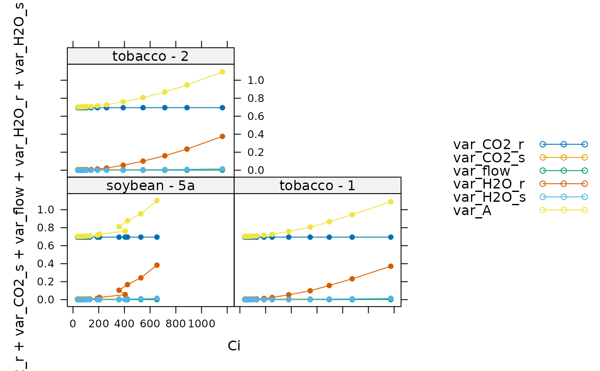
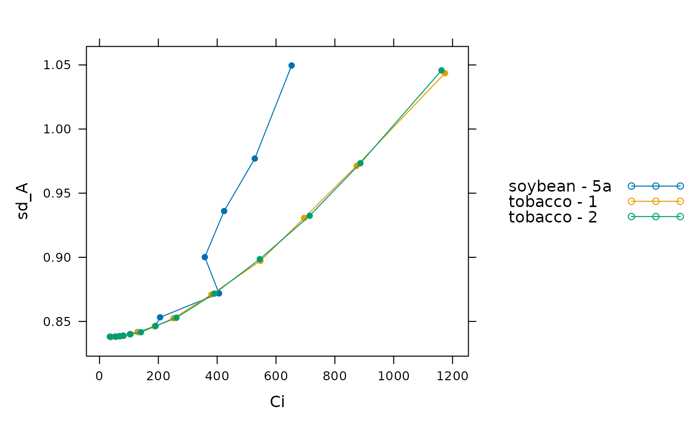

Estimate variance of measured Licor values
estimate_licor_variance.RdEstimates variance and standard deviation of the net CO2 assimilation rate as measured by a Licor Li-6800 or similar portable photosynthesis system.
Usage
estimate_licor_variance(
exdf_obj,
sd_CO2_r,
sd_CO2_s,
sd_flow,
sd_H2O_r,
sd_H2O_s,
a_column_name = 'A',
co2_r_column_name = 'CO2_r',
co2_s_column_name = 'CO2_s',
corrfact_column_name = 'CorrFact',
flow_column_name = 'Flow',
h2o_r_column_name = 'H2O_r',
h2o_s_column_name = 'H2O_s',
s_column_name = 'S'
)Arguments
- exdf_obj
An
exdfobject containing gas exchange data.- sd_CO2_r
The standard deviation of reference CO2 concentrations (
CO2_r) in units ofmicromol mol^(-1).- sd_CO2_s
The standard deviation of sample CO2 concentrations (
CO2_s) in units ofmicromol mol^(-1).- sd_flow
The standard deviation of flow rates (
Flow) in units ofmicromol s^(-1).- sd_H2O_r
The standard deviation of reference H2O concentrations (
H2O_r) in units ofmmol mol^(-1).- sd_H2O_s
The standard deviation of reference H2O concentrations (
H2O_r) in units ofmmol mol^(-1).- a_column_name
The name of the column in
exdf_objthat contains the net CO2 assimilation rate inmicromol m^(-2) s^(-1).- co2_r_column_name
The name of the column in
exdf_objthat contains the CO2 concentration in the reference line inmicromol mol^(-1).- co2_s_column_name
The name of the column in
exdf_objthat contains the CO2 concentration in the reference line inmicromol mol^(-1).- corrfact_column_name
The name of the column in
exdf_objthat contains the leak correction factor (dimensionless)- flow_column_name
The name of the column in
exdf_objthat contains the flow rate of air entering the leaf chamber inmicromol s^(-1).- h2o_r_column_name
The name of the column in
exdf_objthat contains the H2O concentration in the reference line inmmol mol^(-1).- h2o_s_column_name
The name of the column in
exdf_objthat contains the H2O concentration in the sample line inmmol mol^(-1).- s_column_name
The name of the column in
exdf_objthat contains the leaf chamber area incm^2.
Details
Uses the error propogation formula to calculate the influence of the variance
in CO2_r, CO2_s, etc on the variance of A, as calculated
by a Licor LI-6800.
Value
An exdf object based on exdf_obj that includes additional
columns representing the standard deviation of A measurements
(sd_A), and the individual terms comprising the total variance of
A, such as var_CO2_r, var_CO2_s, etc.
Examples
# Read an example Licor file included in the PhotoGEA package
licor_file <- read_gasex_file(
PhotoGEA_example_file_path('c3_aci_1.xlsx')
)
# Define a new column that uniquely identifies each curve
licor_file[, 'species_plot'] <-
paste(licor_file[, 'species'], '-', licor_file[, 'plot'] )
# Organize the data
licor_file <- organize_response_curve_data(
licor_file,
'species_plot',
c(9, 10, 16),
'CO2_r_sp'
)
# Estimate variance in measured A values
licor_file <- estimate_licor_variance(
licor_file,
sd_CO2_r = 1,
sd_CO2_s = 0.1,
sd_flow = 0.2,
sd_H2O_r = 0.5,
sd_H2O_s = 0.1
)
# Plot each component of the total variance of A
lattice::xyplot(
var_CO2_r + var_CO2_s + var_flow + var_H2O_r + var_H2O_s + var_A ~ Ci | species_plot,
data = licor_file$main_data,
type = 'b',
pch = 16,
auto = TRUE
)

# Plot the standard deviation of A
lattice::xyplot(
sd_A ~ Ci,
group = species_plot,
data = licor_file$main_data,
type = 'b',
pch = 16,
auto = TRUE
)
